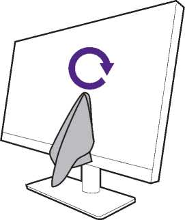
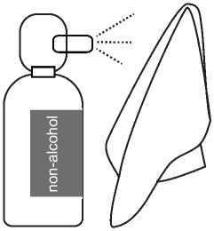
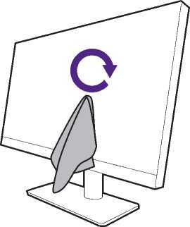
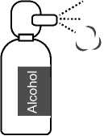
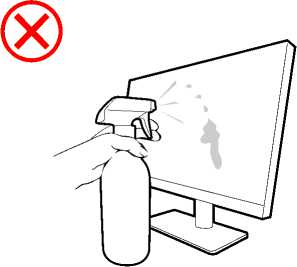

Please follow these safety instructions for best performance, and long life for your monitor.
As your monitor panel comes with a special anti-glare coating, use and clean the monitor carefully.
• Stains on the monitor screen could be obvious. Be cautious when you use or clean the monitor and avoid getting oil or dust on the screen.
• Fingerprints and dust under normal use could be wiped away by a microfiber cleaning cloth.
• Clean the screen surface gently and carefully. Hard scrubbing could damage the screen coating.
Be sure to follow the instructions to clean the screen surface appropriately.
You are recommended to use a microfiber cleaning cloth to clean your monitor screen. It is an eco-friendly design as it is reusable, washable, and liquid-free.
1. Unplug the monitor from the power outlet before cleaning.
2. Make sure there is no sharp debris on the cleaning cloth to avoid scratching the screen.
3. Hold the edge of the monitor and avoid excessive force on the screen.
4. Make sure the cleaning cloth is clean and dry. Start with a small, clean part of the cloth and wipe the stained area of the screen gently in circles. If it is still not clean, continue with another clean part of the cloth to avoid spreading the grease around. If both sides of the cloth are used and get dirty, wash and dry the cloth properly.

To prevent the seams around the cleaning cloth from marring the screen surface, avoid wiping the screen with the edge of the cleaning cloth.
5. If necessary, apply a small drop of alcohol-free screen cleaner on a small, clean part of the cleaning cloth, and wipe the stained area gently in circles. See Using a screen cleaner on page 13 for more information.
6. Use a clean part of the cloth to wipe dry the screen completely.If it is still not clean, continue with another clean part of the cloth to avoid spreading the grease around. Repeat this step until the screen is clean.


7. The cleaning cloth may get dirty after using several times and may not be able to clean the screen properly. Wash it with detergent and remove debris from it by hand if necessary. Keep it in a cool place until it is dry. Make sure it is completely dry before next cleaning.
• Use screen cleaning wipes which are pre-moistened and alcohol-free. You can wipe away oil and fingerprints easily.
• Use an alcohol-free screen cleaner kit. Spray on the microfiber cloth that came with the screen cleaner kit, and wipe stains off the screen. Never spray anything directly onto the screen.
• Make sure no liquid goes into the gap between the screen and the bezel. Liquids inside the monitor could cause short circuits.


Table of Contents
2025/6/6 PV3200U-EM-V1
15